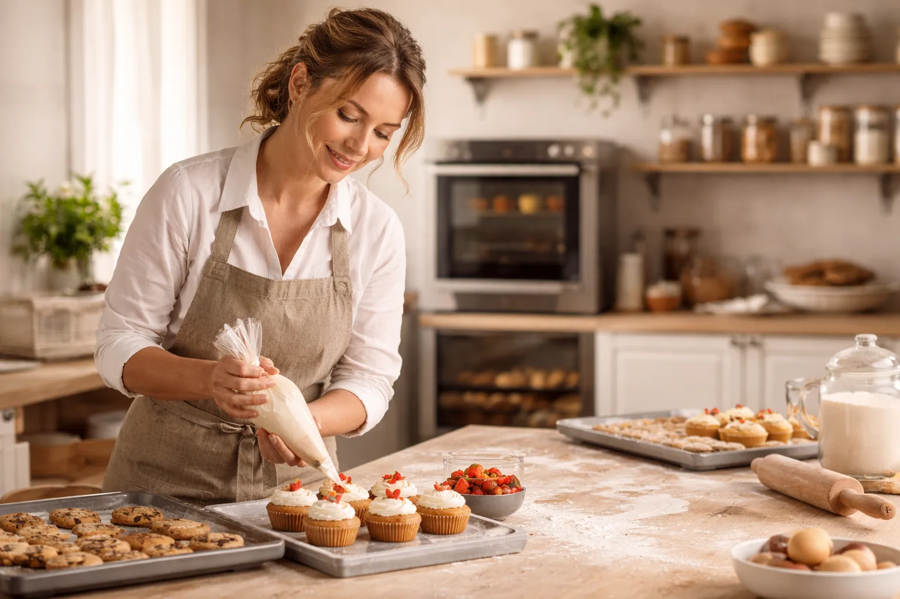
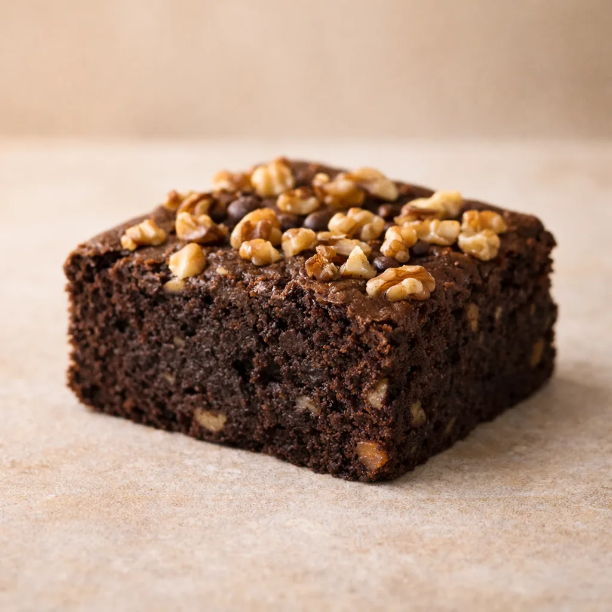
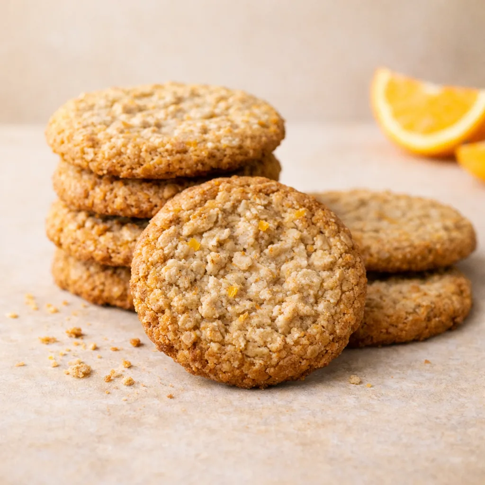

Pasteleria artesana sin renuncias
Apostamos por recetas sabrosas, texturas cuidadas y una presentacion bonita para que cada encargo llegue perfecto.
Somos un obrador especializado en bolleria, tartas y packs para celebraciones sin gluten. Elaboramos por encargo, con una seleccion cuidada de productos y atencion cercana para cada pedido.

Descubre una seleccion de reposteria sin gluten hecha con mimo, ingredientes escogidos y formatos pensados tanto para caprichos del dia a dia como para celebraciones especiales.
Apostamos por recetas sabrosas, texturas cuidadas y una presentacion bonita para que cada encargo llegue perfecto.
Reunimos cinco referencias muy queridas por nuestros clientes, desde brownies intensos hasta packs pensados para compartir.
Si buscas un pedido personalizado, quieres resolver una duda o prefieres recibir noticias del obrador, te lo ponemos facil.
Una pequena muestra de nuestras elaboraciones favoritas, pensadas para desayunos lentos, meriendas especiales y celebraciones con mucho sabor.

ChocolateTextura intensa, cacao profundo y acabado jugoso.
4,80 EUR Ver producto Temporada
Temporada
Bizcocho suave con crema ligera y nuez tostada.
28,00 EUR Ver producto
DesayunoCrujientes, aromaticas y pensadas para repetir.
7,50 EUR Ver productoNacimos para que las personas con intolerancia al gluten puedan disfrutar de una experiencia pastelera rica, cuidada y sin renuncias. Trabajamos por encargo, con lotes cortos y recetas que priorizan sabor, textura y tranquilidad.